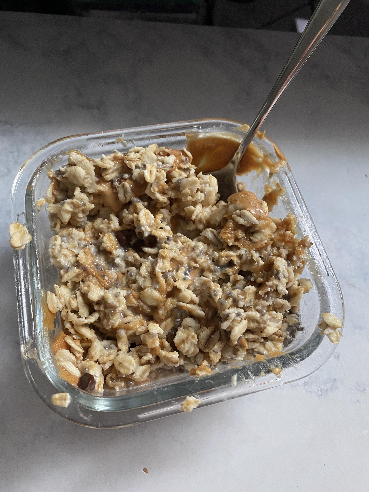

Overnight Oats

Fast and Easy Breakfast Meal Prep for Big Gains!
Sick of constantly wasting the first 10-20 minutes of your day deciding and preparing
your breakfast? Consider meal prepping. One nights preparation of this recipe can last you
up to 4 days with an instantly ready meal as soon as you wake up. It's tasty and will
give you plenty of protein to help you build muscle. Make your mornings easier with overnight
oats!
Ingredients
- Oats
- Almond Milk
- Dates
- Cinnamon
- Walnuts
- 2 Apples
- 25g of Protein Powder
Steps
- Place 4 plastic containers out. Pour oatmeal into each container. Perhaps filling
just under half of each container with oats.
-
Chop up 8 dates into the smallest pieces possible for each container. Spread into the oats.
-
Crush walnuts into very small pieces as well. Even to the point where they become powder-like.
Spread a decent amount over each container.
- Chop up 2 apples, once again, into as small as possible pieces.
- Spread a half of each diced apple into each container
- Use a blender to mix 4 servings of protein with almond milk. So 100g's of protein all up.
- Pour an even amount of protein shake into each container. You may need to use a spoon to mix the oats
with the milk.
- Once mixed, you'll probably find you have some left over protein shake. But after mixing,
you'll also find more room to pour. Keep pouring and mixing until you have used up all
of your protein shake.
- Pour a decent amount of cinnamon on top of each container
- Close each lid and place into the fridge overnight
- Enjoy ready made breakfast meals for the next 4 days!